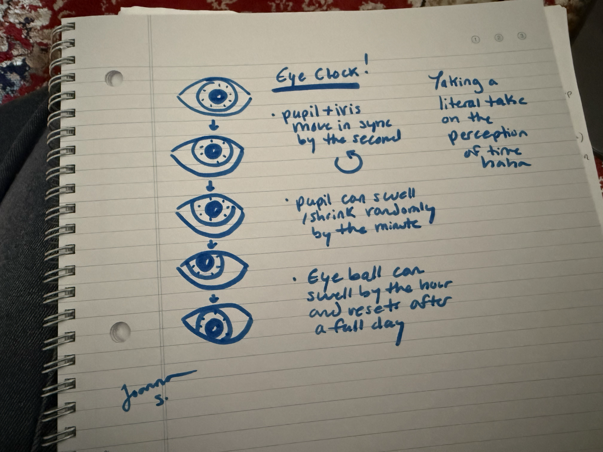

How can we question our perception of time? In taking this
question both literally and metaphorically, I attempted to
make an eye for a clock. Perhaps now the clock is perceiving
us, the viewer?
I coded the pupil and iris to be aligned in their movements.
Both the pupil and iris circle around the inner radius of the
eyeball, its placement changing every second. Every minute, the
pupil dilates/increases or shrinks in size. Every hour, the
eyeball swells or increases in size as well. Drag your mouse
to organically shift the placement of the left eye's iris and pupil.
